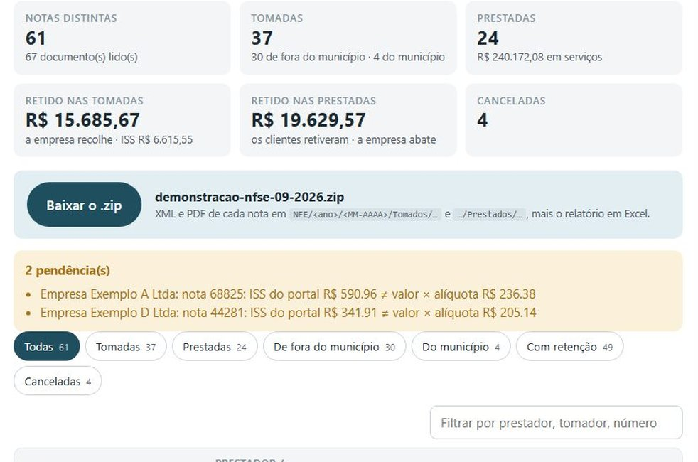

Automação · PythonRobô NFS-e: tomadas e prestadas
Busca as notas de serviço que cada empresa tomou e as que ela prestou direto dos web services públicos (Nota Paulistana por SOAP assinado e o Sistema Nacional NFS-e por API REST com mTLS e NSU incremental), organiza por competência e lê de cada nota o que foi retido: ISS, INSS, IRRF, PIS, COFINS e CSLL, inclusive quando o leiaute só traz a soma, conferindo o total informado. As tomadas de fora do município são escrituradas no portal com travas antes de gravar: anti-duplicidade, número conferido, ISS recalculado. Idempotente, com falha isolada por empresa e demonstração offline.
PythonSOAP · XMLDSigREST · mTLSlxml · cryptographyRetenções por tributoInterface local112 testes · CI
Interface local: o certificado A1 não sai da sua máquina. Sem certificado, há o modo com dados simulados.